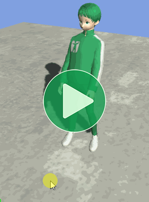
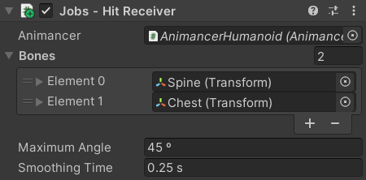

Location: Samples/10 Animation Jobs/03 Lean
Recommended After: Two Bone IK and Damping
Learning Outcomes: in this sample you will learn:
How to dynamically lean a character by rotating their spine.
How to write a custom Animation Job.
Summary
This sample demonstrates how you can use an Animation Job to dynamically rotate a character's spine to the side as if they're being hit by an attack.
- Click on the ground to hit the character from that direction:
- Left Click for a strong hit.
- Right Click for a weak hit.
- This sample is based on a dynamic lean script by ted-hou on GitHub.
Overview
This sample reuses PlayAnimationOnEnable from the Quick Play sample and has three new scripts:
SimpleLeaninherits fromAnimancerJobas a wrapper around the job to provide a clean API for other scripts to access the job.- The
Jobstruct is nested inside theSimpleLeanclass and contains the actualIAnimationJobimplementation.
- The
HitReceiverinitializes and controls theSimpleLean.ClickToHitcallsHitReceiver.Hitwhen the user clicks the mouse.
{kind=link}
Initialization
SimpleLean inherits from AnimancerJob which is a simple base class that makes it a bit easier to manage Animation Jobs in Animancer.
public class SimpleLean : AnimancerJob<SimpleLean.Job>, IDisposable
{
The constructor initializes the Job and passes it the required details as we have seen in the previous Animation Jobs samples.
public SimpleLean(
AnimancerGraph animancer,
Vector3 axis,
NativeArray<TransformStreamHandle> leanBones)
{
var animator = animancer.Component.Animator;
_Job = new Job
{
root = animator.BindStreamTransform(animator.transform),
bones = leanBones,
axis = axis,
angle = AnimancerUtilities.CreateNativeReference<float>(),// See the Angle section.
};
The CreatePlayable method is inherited from AnimancerJob. It calls AnimancerGraph.InsertOutputJob like in the earlier samples, but it also stores the returned AnimationScriptPlayable for the Cleanup process which also requires this object to be registered in the AnimancerGraph.Disposables list.
CreatePlayable(animancer);
animancer.Disposables.Add(this);
}
Axis
Since the _Job field (inherited from AnimancerJob) stores the job created in the constructor, we can just get the current axis directly from it.
public Vector3 Axis
{
get => _Job.axis;
But since the job is a Value Type, simply modifying the values stored in the _Job field will not actually modify the values of the job inside the AnimationScriptPlayable in the PlayableGraph so after we make any modifications we need to use AnimationScriptPlayable.SetJobData to give it the new data.
set
{
if (_Job.axis == value)
return;
_Job.axis = value;
_Playable.SetJobData(_Job);
}
}
Angle
Unlike the Axis, the Angle of the lean will be changed very frequently so we want this property to be as efficient as possible. Even though jobs are not allowed to use reference types, we can exploit the fact that NativeArrays actually behave like reference types. By allocating a NativeArray with a size of 1 we will be able to efficiently access its value both inside and outside the job.
Inside the SimpleLean.Job struct, we declare the angle field as a NativeArray.
public struct Job : IAnimationJob
{
...
public NativeArray<float> angle;
...
}
Then when we initialize the Job in the SimpleLean constructor, we use AnimancerUtilities.CreateNativeReference to allocate a single element array for it.
public SimpleLean(
AnimancerGraph animancer,
Vector3 axis,
NativeArray<TransformStreamHandle> leanBones)
{
...
_Job = new Job
{
...
angle = AnimancerUtilities.CreateNativeReference<float>(),
};
...
}
And that allows the Angle property to set the value without needing to use the AnimationScriptPlayable.SetJobData method to copy the entire Job.
public float Angle
{
get => _Job.angle[0];
set => _Job.angle[0] = value;
}
Cleanup
As explained in the Damping sample, when you're done with a NativeArray you must call Dispose on it to avoid leaking its memory. We could add the arrays directly to the AnimancerGraph.Disposables list, but it might be useful to be able to remove the SimpleLean system separately from the destruction of the rest of the character and we don't want to let it cause an error if it tries to Dispose an array we already disposed.
We start by implementing the IDisposable interface with our own Dispose method.
public class SimpleLean : AnimancerJob<SimpleLean.Job>, IDisposable
{
public SimpleLean(...)
{
...
animancer.Disposables.Add(this);
}
public void Dispose()
{
if (_Job.angle.IsCreated)
_Job.angle.Dispose();
if (_Job.bones.IsCreated)
_Job.bones.Dispose();
}
That would take care of the automatic disposal, but if another script calls that Dispose method the Job would stop working without actually being removed from the PlayableGraph so it would still be executing and causing errors. So instead we can instead use an Explicit Interface Implementation and make the Dispose method private.
void IDisposable.Dispose() => Dispose();
private void Dispose()
{
if (_Job.angle.IsCreated)
_Job.angle.Dispose();
if (_Job.bones.IsCreated)
_Job.bones.Dispose();
}
Then we override the AnimancerJob.Destroy method to call the Dispose method as well.
public override void Destroy()
{
Dispose();
base.Destroy();
}
So now the AnimancerGraph will call our Dispose method when the whole graph is being destroyed and other scripts can call that Destroy method which will both Dispose the job and remove it from the graph.
Job
The actual Job implementation is fairly simple. We already initialized the fields in the SimpleLean constructor.
public struct Job : IAnimationJob
{
public TransformStreamHandle root;
public NativeArray<TransformStreamHandle> bones;
public Vector3 axis;
public NativeArray<float> angle;
The IAnimationJob interface contains two methods which are both called every time the PlayableGraph is updated (generally once per frame). We don't care about ProcessRootMotion here and want to do all our math in ProcessAnimation.
public void ProcessRootMotion(AnimationStream stream) { }
public void ProcessAnimation(AnimationStream stream)
{
We start by calculating the angle that each bone will be rotated by dividing the specified total Angle by the number of bones. For this sample we're controlling the character's Chest and Spine bones, so each will receive half of the total angle.
var angle = this.angle[0] / bones.Length;
Since the Axis is easier for other scripts to specify in local space, so we want to rotate that axis according to the character's root.
var worldAxis = root.GetRotation(stream) * axis;
Then we can use that angle and worldAxis to calculate the rotation Quaternion we want to add to each bone.
var offset = Quaternion.AngleAxis(angle, worldAxis);
And finally, we just add that offset to each of the bones.
for (int i = bones.Length - 1; i >= 0; i--)
{
var bone = bones[i];
bone.SetRotation(stream, offset * bone.GetRotation(stream));
}
}
}
}
Note that "adding" rotations actually uses the multiply operator (*) due to the way Quaternion math works.
Hit Receiver
| Code | Inspector |
|---|---|
|
 HitReceiver is responsible for initializing and managing the SimpleLean to control the Spine and Chest bones. |
On startup, it asserts that at least one bone has been assigned, converts the Transform[] into a NativeArray<TransformStreamHandle> for the job to use, and creates the SimpleLean with it.
protected virtual void Awake()
{
Debug.Assert(_Bones.Length > 0, "No bones are assigned.", this);
NativeArray<TransformStreamHandle> boneHandles =
AnimancerUtilities.ConvertToTransformStreamHandles(_Bones, _Animancer.Animator);
_Lean = new(_Animancer.Graph, Vector3.right, boneHandles);
}
When it receives a hit, it uses a Cross product to set the Axis of rotation perpendicular to the hit direction and enables itself so it will start receiving Updates.
public void Hit(Vector3 direction, float force)
{
_Lean.Axis = Vector3.Cross(Vector3.up, direction).normalized;
_Speed = force;
enabled = true;
}
Every Update it uses Mathf.SmoothDamp to move the rotation Angle towards 0. Note how Hit set the _Speed which causes the value to move away from the target for a few frames as it decelerates before it can start moving back towards 0.
protected virtual void Update()
{
float angle = Mathf.SmoothDamp(_Lean.Angle, 0, ref _Speed, _SmoothingTime);
angle = Math.Min(angle, _MaximumAngle);
_Lean.Angle = angle;
And when it finally settles at 0, this script disables itself until it receives another Hit.
if (angle == 0 && _Speed == 0)
enabled = false;
}
}
Click To Hit
Since we don't have a proper system for hitting the character from a particular direction, ClickToHit simply lets the user click on a point on the ground to simulate a hit to the character from that direction with a different amount of force for Left or Right Click.
public class ClickToHit : MonoBehaviour
{
[SerializeField] private HitReceiver _HitReceiver;
[SerializeField] private float _LeftClickForce = 500;
[SerializeField] private float _RightClickForce = 300;
protected virtual void Update()
{
if (SampleInput.LeftMouseDown)
HitTarget(_LeftClickForce);
else if (SampleInput.RightMouseDown)
HitTarget(_RightClickForce);
}
It uses a Physics.Raycast to find the position on the ground where the mouse is pointing like in the Directional Mixers sample:
private void HitTarget(float force)
{
Ray ray = Camera.main.ScreenPointToRay(SampleInput.MousePosition);
if (!Physics.Raycast(ray, out RaycastHit raycastHit))
return;
Then it simply gets the direction from the ray hit position to the character and applies a Hit from that direction:
Vector3 direction = _HitReceiver.transform.position - raycastHit.point;
_HitReceiver.Hit(direction, force);
}
}
Conclusion
This technique could be used for other things such as making a character lean to the side while running around a corner, turn and bend according to the direction they want to look, or even to widen the character's legs and arms to accomodate skinny or bulky characters without needing separate animations for each body type.
Using Animation Jobs for this allows the result to be entirely procedural without requiring any additional animations to be created, but the resulting motion is limited by its simplicity as you can see that it only affects the Sping and Chest bones while the rest of the upper body simply rotates rigidly. If you had animations for getting hit from each direction, you could use a Directional Mixer to blend them into a potentially better looking result.